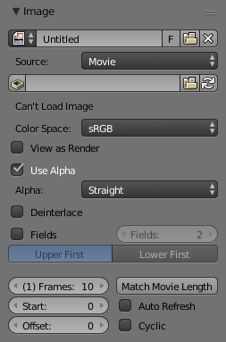

Image Settings¶

Image panel.
- Image
Data-block menu.
- New
+ - The New Image button opens a pop-up to configure a Generated image.
- New
Source¶
See about supported Supported Graphics Formats.
Single Image¶
Still image or a single frame.
Image Sequence¶
Each frame is stored in a separate file. How to Opening an Image Sequence.
- Frame
- A label showing the current frame.
- Further options
- See Movie below.
Movie¶
Frames packed into a container.
- Deinterlace
- Removes fields in a video file. For example, if it is an analog video and it has even or odd interlacing fields.
- Fields
- Sets the number of fields per rendered frame (2 fields is 1 frame). Used with Fields and interlaced video, it says whether each image has both odd and even, or just one.
- Frame
- Frames
- Sets the range of frames to use.
- Start
- Global starting frame of the sequence, when the playback should start. This is a global setting which means it affects all clip users such as the Movie Clip editor itself, motion tracking constraints and compositor nodes.
- Offset
- Offsets the first frame of the clip. It adds an extra offset to the frame number when converting a scene frame to the frame number in the file name. This option does not affect tracking data or any other associated data.
- Match Movie Length
- This button set image's user's length to the one of selected movie.
- Auto Refresh
- Automatically refresh images on frame changes.
- Cyclic
- Start over and repeats after the last frame to create a continuous loop.
Generated¶
Image generated in Blender or preloaded.

Image panel for Generated source. |

The New Image pop-up menu. |
- Width, Height
- The size of image in pixels.
- Color
- Sets the fill color if creating a blank image.
- 32 bit Float / Float Buffer
- Creates a 32 bit image. This is a larger file size, but holds much more color information than the standard 8 bit image. For close ups and large gradients, it may be better to use a 32 bit image.
- Type
- Blank
- Creates a Blank image of a single specified color.
- UV Grid
- Creates a checkerboard pattern with a colored cross (+) in each square.
- Color Grid
- Creates a more complex colored grid with letters and numbers denoting locations in the grid. It could be used for testing how the UVs have been mapped and to reduce stretching or distortion.
Common Options¶
- File
Use for replacing or packing files.
- Pack
- Embed the resource into the current blend-file.
- Path
- Path to the linked file.
- Open
- Opens the File Browser to select a file from a drive.
- Reload
- Reloads the file. Useful when a file has been reworked in an external application.
- Color Space
-
- XYZ
- XYZ space.
- VD16
- The simple video conversion from a gamma 2.2 sRGB space.
- sRGB
- Standard RGB display space.
- Raw
- Raw space.
- Non-Color
- Color space used for images which contains non-color data (e.g. normal maps).
- Linear ACES
- ACES linear space.
- Linear
- Linear 709 (full range). Blender native linear space.
- View as Render
- Applies color transform when displaying this image on the screen.
- Use Multi-View
- See Multi-View.
- Use Alpha
Determines whether the alpha channel of the image is used.
- Alpha Mode
-
Straight, Premultiplied
- Fields
Work with Fields images. Video frames consist of two different images (fields) that are merged. This option ensures that when fields are rendered, the correct field of the image is used in the correct field of the rendering. Mip-mapping cannot be combined with Fields. Order of video fields:
Upper First, Lower First.